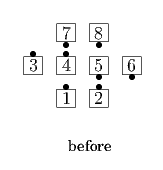
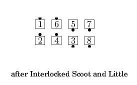
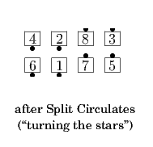

Interlocked Plenty
Interlocked Plenty
From a Generalized 1/4 Line or other applicable formations: Interlocked Little; do your part of two Split Circulates, passing right shoulders as necessary; Outsides Counter Rotate 1/4 and Roll as the Centers 1/2 Zoom in the center. Usually ends in a 1/4 Tag.
Interlocked Scoot and Plenty
From a 1/4 Line: Interlocked Scoot Back, then Interlocked Little or Left Interlocked Little, according to the hand with which the Interlocked Scoot Back was done, then the remaining parts of an Interlocked Plenty. Ends in 1/4 Tag.




© Copyright 2004-2017 Vic Ceder and CALLERLAB Inc., The International Association of Square Dance Callers. Permission to reprint, republish, and create derivative works without royalty is hereby granted, provided this notice appears. Publication on the Internet of derivative works without royalty is hereby granted provided this notice appears. Permission to quote parts or all of this document without royalty is hereby granted, provided this notice is included. Information contained herein shall not be changed nor revised in any derivation or publication.